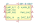
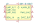
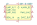
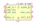
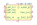

| Symbol |
Description |

004-0-0010 | Description: S8 Commercial, CO2 sensor, 400-2000 PPM, 1kHz PWM output, Modbus, THT
Keys: Senseair co2 gas sensor pwm modbus
Datasheet: https://rmtplusstoragesenseair.blob.core.windows.net/docs/publicerat/PSP103.pdf |

004-0-0013 | Description: S8 Residential, CO2 sensor, 400-2000 PPM, 1kHz PWM output, Modbus, THT
Keys: Senseair co2 gas sensor pwm modbus
Datasheet: https://rmtplusstoragesenseair.blob.core.windows.net/docs/publicerat/PSP107.pdf |

004-0-0050 | Description: S8 2%, CO2 sensor, 0.04-2% by volume, 1kHz PWM output, Modbus, THT
Keys: Senseair co2 gas sensor pwm modbus
Datasheet: https://rmtplusstoragesenseair.blob.core.windows.net/docs/publicerat/PSP108.pdf |

004-0-0053 | Description: S8 LP, CO2 sensor, 400-2000 PPM, 1kHz PWM output, Modbus, THT
Keys: Senseair co2 gas sensor pwm modbus
Datasheet: https://rmtplusstoragesenseair.blob.core.windows.net/docs/publicerat/PSP126.pdf |

004-0-0071 | Description: S8 5%, CO2 sensor, 0.04-5% by volume, 1kHz PWM output, Modbus, THT
Keys: Senseair co2 gas sensor pwm modbus
Datasheet: https://rmtplusstoragesenseair.blob.core.windows.net/docs/publicerat/PSP0113.pdf |
004-0-0075 | Description: S8 Commercial, CO2 sensor, 400-2000 PPM, 1kHz PWM output, Modbus, THT
Keys: Senseair co2 gas sensor pwm modbus
Datasheet: https://rmtplusstoragesenseair.blob.core.windows.net/docs/publicerat/PSP103.pdf |
CCS811 | Description: Ultra-low power digital gas sensor for monitoring indoor air quality
Keys: metal oxide gas sensor MOX volatile organix comounds VOC I2C
Datasheet: http://ams.com/eng/Products/Environmental-Sensors/Air-Quality-Sensors/CCS811 |
MQ-6 | Description: Semiconductor Sensor for Flammable Gas
Keys: flammable gas sensor LPG
Datasheet: https://www.winsen-sensor.com/d/files/semiconductor/mq-6.pdf |